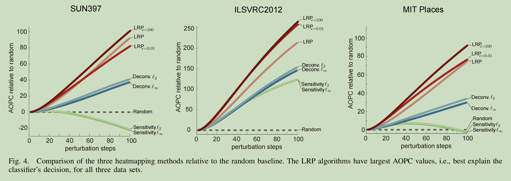

标题：Evaluating the Visualization of What a Deep Neural Network Has Learned
期刊：IEEE Transactions on Neural Networks and Learning Systems (TNNLS)
发表时间：2016
链接：https://arxiv.org/pdf/1509.06321
在 CNN 时代，虽然 CNN 在图像分类问题上已经达到了相当好的效果，但一个问题困扰着大家，即我们不再像往常一样使用提取的特征，而是将一切判断依据都交给神经网络，这样是否太不具备可解释性了呢，我们能否获得模型作出这一判断的依据呢？
针对这一问题，一篇传奇文章 Visualizing and Understanding Convolutional Networks 给出了解决方案，不久后 Deep Inside Convolutional Networks: Visualising Image Classification Models and Saliency Maps 和 On Pixel-Wise Explanations for Non-Linear Classifier Decisions by Layer-Wise Relevance Propagation 两篇史诗文章也进行了跟进。这三篇文章都使用热力图方式来为模型的判别提供解释，即生成一个和输入图像逐像素对应的热力图，反应每个像素对模型判别的重要程度。但这样有一个问题，就是我们并没有一个严谨的方法来评估，这些方法生成的热力图是否很好地反映了模型的判定依据，亦或者哪种方法生成的热力图是最好的，而是只能根据人的直觉来主观判断方法优劣。本篇文章的目的就是提出一种评判方式，来客观评价基于热力图的可视化方法的优劣。下面我将首先简单介绍三种可视化方法，然后介绍本篇文章提出的评价方式。
可视化方案一: Sensitivity Analysis
对应文章为 Deep Inside Convolutional Networks: Visualising Image Classification Models and Saliency Maps.
这篇文章的思路其实比较简单，就是对于一张输入图像，将训练好的 CNN 对所有类别的未归一化分数 (进行 Softmax 之前的分数) 中最高的那个，对输入图像的每个像素求导数。这里导数的作用可以从两个方面理解：第一种是直觉上，如果分类分数对一个像素梯度很大，那么梯度的微小变动可能导致结果的巨大变化，从而这个像素对于分类结果比较重要；第二种则是我们利用一个泰勒展开：
其中 $\boldsymbol{x}$ 为输入图像, $x_{(i)}$ 为输入图像的一个像素, $f$ 为分类器对于某个特定类别的输出分数。我们可以将 $\boldsymbol{x}_0$ 选定为特殊的分界点，使得：
这样我们发现，我们就让最终的分类分数划分到每个像素上，而权重正是分数对这个像素的导数。因而可视化这一导数，以理解模型关注哪些像素是合理的。
这篇论文提出了两种利用导数进行可视化的方式。第一种方式不是对于某一张特定输入图像进行可视化，而是对模型对某一个类别的整体认识进行可视化，获得一张模型对这一类别认识的“根本图像”。具体方法为初始化一张图像，对于每一个像素的每一个 RGB 通道，对于模型对这一类别的分数进行梯度下降 (有点类似于 prompt tuning). 我觉得这种方式本质上是想用判别模型实现生成模型的功能，肯定是不现实的。效果看上去也确实不太理想。
第二种方式就是比较自然的，对于一张特定输入图像，将每个像素对它最终被分类器分到的类别的分数求导。
这种方法不仅效果好一些，而且只需要一次反向传播就可以得到可视化结果，很方便。图像中像素的亮度由 $M_{ij} = \max_c|w_{h(i,j,c)}|$ 得到，即分类分数对像素每个颜色通道导数绝对值的最大值。
虽然从直觉上这种基于梯度的方法确实能提取出对模型输出更“敏感”的输出，但事实上，这种方法相比于接下来的两种方法效果并不好。我觉得根本原因在于，“对于输出而言更敏感的像素”和“模型更关注的像素”其实并不等价。比如举一个简单的例子，如果我们微小地改变一下那些梯度很大的像素的像素值，模型对这个类别的分数并不一定会下降，反而有可能上升；反而，只有变动那些处于极值点上，梯度为 0 的像素才能保证分类分数下降。这意味着这种方法并不能区分像素的“正证据”和“负证据”。这种“敏感性”的含义其实是比较模糊的。
可视化方案二: Deconvolution Method
对应文章为 Visualizing and Understanding Convolutional Networks
梯度这条路虽然走不通，但它的一种思想在这个任务上是无法去除的，即我们必定需要将某种信息从结果逐层传递给输入图像的每个像素，只是这种信息不一定是梯度。这篇文章首先在 CNN 的任意一层中选择激活值最大的那个神经元，将该层所有其他神经元的激活值都设为 0. 而后将该激活值逐层向回传播。在这一传播过程中，针对卷积层、ReLU 层，以及最大池化层，分别会进行不同行为：
- 对卷积层的回传会使用转置卷积。简单说一下，转置卷积可以用两种方式理解，第一种是将输出图像四周 padding 一定数量的 0, 而后用卷积原始卷积核的翻转（上下翻转、左右翻转）对 padding 后的输出图像进行卷积，其输出和原始输入图像维度一致；第二种方式是，我们将原始 $n\times n$ 的输入图像 flatten 为 $n^2 \times 1$ 的向量，这样卷积操作就会变为一个矩阵乘法 (flatten 的向量左乘一个 $m\times n^2$ 的矩阵, $m$ 表示输出图像长宽)。转置卷积操作就是将这个矩阵转置后右乘原始输出图像的 flatten, 得到一个和原始输入图像的 flatten 维度一样的向量。再将其按照原始输入图像的维度堆叠起来就得到转置卷积的输出。熟悉卷积操作的同学知道转置卷积操作其实就是对原始卷积的求导操作。这两种视角可以参考 https://blog.csdn.net/weixin_44246009/article/details/119379516 和 https://zhuanlan.zhihu.com/p/549164774 两篇文章。
- Max Pooling 操作的回传会使用 Unpooling. 具体方法就是，前向传播过程中记录 Max Pooling 时最大值的位置，回传时只将被回传的值传给这个位置的神经元，其余神经元置 0. 可以发现这一步操作也和梯度反向传播一致。
- ReLU 的回传是该架构和梯度反向传播唯一不同的操作。考虑 $z_{i}^{l}$ 和 $a_{i}^{l}$ 之间的 ReLU, 那么梯度的反向传播中，当 $z_{i}^{l}$ 为正时，该连接梯度为 1, 否则为 0; 而该方法是在回传中使用 ReLU, 即当回传到。$a_{i}^{l}$ 的值为正时，继续向前回传这一值，否则回传 0.
从 Evaluating the visualization of what a Deep Neural Network has learned 这篇文章的实验结果以及我自己的简单验证效果来看, Deconvolution Method 生成的热力图都远比 Sensitivity Analysis 生成的热力图更加“精细”，即对物体更有代表性的部分框定比较准确。下面两张图依次为 Deconvolution Method 和 Sensitivity Analysis 对同一模型、输入的生成结果，可以看到前者捕捉到了猫面部的细节特征，但后者只捕捉到了猫整体的大致范围。
虽然效果比较好，但是具体为什么要这样设计模型架构，尤其是这样处理 ReLU 部分，我个人感觉是比较令人费解的。我目前的理解是，我们已经知道梯度不能很好地反应模型对于每个像素的关注情况（1. 上面提到梯度绝对值大并不代表遮盖像素会降低模型的类别分数; 2. 公式 (2) 在 $\boldsymbol{x}$ 与 $\boldsymbol{x}_0$ 距离较远时，泰勒展开误差很大），因此我们需要考虑一种不同于梯度的视角，而 Deconvolution Method 给出的视角是信息回传的视角，即我们回传一种模型对于像素（或者说神经元）的关注度的分数（不妨称之为关注分数）。从这个视角来看，在 Deconvolution Method 中，转置卷积以及 Unpooling 的选择只是恰巧与梯度计算一致。
我们的回传过程从一个起始神经元开始。我们可以将回传过程中，一个神经元获得的关注分数理解为，起始神经元对这个神经元在这一层的相对关注程度。那么我们只要说明在任一 $l+1$ 层向 $l$ 层的传递过程中，每一种操作都对应着 $l+1$ 层神经元对 $l$ 层神经元关注程度的分配，那么就可以用数学归纳法的思想说明关注程度可以反应其实神经元到输入层像素的关注程度，从而说明方法的合理性。
- Unpooling: 前向传播的 Pooling 过程是几个神经元之中激活值最大者传递到下一层的神经元，相当于下一层的这个神经元并没有接收到其他几个神经元的信息。那么关注分数回传时不给那几个神经元进行分配，而是全部分配给激活值最大的那个神经元是合理的。
- ReLU: 考虑神经元 $z_{i}^{(l)}$ 和 $a_{i}^{(l)}$ 之间的 ReLU 连接。在正常的梯度反向传播过程中，梯度是否沿着该连接传递由前向传播的 $z$ 是否为正决定，而如果我们将信息回传看作一个独立的过程的话，这未必合理。相反, Deconvolution Method 中关注分数是否沿该连接回传由信息分数本身是否为正决定，这保证了回传这一独立过程中数值的连续性。直觉上，如果 $a_{i}^{(l)}$ 分配到的关注分数为正，说明回传初始神经元是关注 $a_{i}^{(l)}$ 的，它继续向前传递关注分数自然是合理的；如果其关注分数为负，那么该神经元不被关注，自然不需要回传。
- 转置卷积：这就对应着常规的注意分数分配。
可视化方案三: Relevance Heatmaps
对应文章为 On Pixel-Wise Explanations for Non-Linear Classifier Decisions by Layer-Wise Relevance Propagation
这篇文章提出了一种名为 LRP 的可视化方法，正式将上面提到的相关性回传思想发扬光大。用这种思路指导，不仅可以可视化基于神经网络的方法，还可以可视化传统机器学习的分类方法，不过在此不过多讨论。
LRP 思想的关键洞察在于，考虑一个神经网络分类器对于某个类别的相关性，这个相关性可以在神经网络的每一层之间传递，且任一层每个神经元的类别相关性之和应当相等。即神经网络中对于一个类别的相关性在每层间传递时不会增加或减少。公式为：
其中 $f(x)$ 为最终模型的类别分数, $R_{d}^{l}$ 表示第 $l$ 层第 $i$ 个神经元承载的类别相关性。
基于此, LRP 进一步建立模型并提出两个关于相关性的载体，即信息，的假设：
- 与预测时前向传播相反，信息是从一个神经元流向其输入神经元的。
- 可以将一个神经元的类别相关性定义为流入的信息之和：不难验证这个公式是和公式 (3) 自洽的。
具体而言，对于一个神经网络，回传过程为
其中 $z_{ij} = w_{ij}a_i$, $z_{j} = \sum_{i}z_{ij}$.
从而
这样一来一部分信息会由于偏置项而损失掉。在必要情况下，这部分损失可以再分配给前一层每个神经元。
这一分配方法的一大问题在于分母 $z_j$ 可能绝对值很小导致数值不稳定。文章给出两种解决方式。第一是根据 $z_j$ 的正负加入一个正的 $\epsilon$ 保证分母数值：
但这会导致公式 (6) 变为
这会导致额外的信息损失，尤其是 $ϵ$ 较大的情况下。
第二种解决数值不稳定的方式是，将正负 $z_{ij}$ 值区分开。令 $z_{j}^{+} = \sum_{i} z_{ij}^{+} + b_{j}^{+}$, $z_{j}^{-} = \sum_{i} z_{ij}^{-} + b_{j}^{-}$ (这里需要令 $b_j^{+}\geq 0$, $b_{j}^{-}\leq 0$, 且 $b_{j}^{+} + b_{j}^{-} = b_{j}$, 这样看其和 $ϵ$ 区别并不是很大，还是要调整数值避免信息损失)，对正负信息加权：
其中保证 $\alpha+\beta=1$. 以 $\alpha=\beta=\frac{1}{2}$ 为例，公式 (6) 变为：
LRP 对于 CNN 而言，几个层的处理都比较简单。对于 Max Pooling 的处理和前两种方式都一致，即将全部相关度传递给前一层激活值最大的神经元；对 ReLU 层无需特殊考虑，因为公式 (5) 只考虑 $z$ 值而并不关心激活操作；对卷积层而言，只需要对连接进行公式 (5) 的操作即可。
回归正题：热力图评估方法
这篇文章以上面三种可视化方法为例，检验了提出的热力图评估指标 AOPC. 首先对于固定的分类器和输入图像定义有序列表：
其中 $\boldsymbol{r}_p$ 为一个二维向量，表征像素横纵坐标。我们将热力图函数记为
其中 $f$ 为分类器。我们规定 $\mathcal{O}$ 中向量从前到后 $\mathcal{H}$ 值递减，即
我们接下来定义一个加噪函数 $g$, 它会去除选定像素周围 $9\times 9$ 的像素的信息。我们从前到后用 $g$ 遮盖 $\mathcal{O}$ 中信息, 并定义
这样一来，如果很靠前的几步被遮蔽，就会导致（正确类别的）分类分数下降明显，那么说明热力图提取的关键位置是准确的，从而说明热力图效果较好。这个指标有些类似于 AUC 的想法。我们定义指标为：
其中 $<\cdot>_{p(\boldsymbol{x})}$ 表示数据集平均。
下图为不同方法在不同数据集上的 AOPC 对比：

下图为不同方法的热力图对比
文章指出，上图最左侧图中 Sensitivity Analysis 的 AOPC 随着遮挡操作反而下降的原因在于，分类器是在 MIT Places 上训练的，而在 SUN397 上分类会有 Out Of Manifold 的问题。因为 Sensitivity Analysis 只能关注局部梯度，因此难以正确可视化；而另外两种可视化方法可以关注全局信息，因此能正常处理。